Divisores y Leyes de Kirchhoff
Circuitos divisores de tensión
Analicemos un circuito en serie simple, determinando las caídas de voltaje en resistencias individuales:
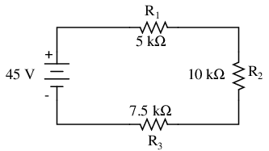
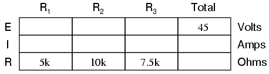
A partir de los valores dados de las resistencias individuales, podemos determinar la resistencia total del circuito, sabiendo que las resistencias se suman en serie:
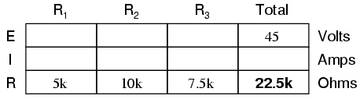
A partir de aquí, podemos usar la Ley de Ohm (I=E/R) para determinar la corriente total, que sabemos que será la misma que la corriente de cada resistencia, siendo las corrientes iguales en todas las partes de un circuito en serie:
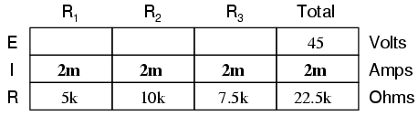
Ahora, sabiendo que la corriente del circuito es de 2 mA, podemos usar la Ley de Ohm (E=IR) para calcular el voltaje en cada resistencia:
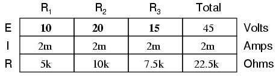
Debería ser evidente que la caída de voltaje a través de cada resistencia es proporcional a su resistencia, dado que la corriente es la misma a través de todas las resistencias. Observe cómo el voltaje a través de R2es el doble que el voltaje en R1, así como la resistencia de R2es el doble que R1.
Si cambiáramos el voltaje total, encontraríamos que esta proporcionalidad de las caídas de voltaje permanece constante:
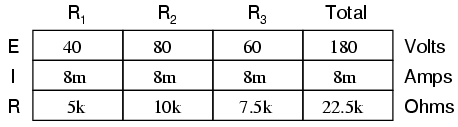
El voltaje a través de R2sigue siendo exactamente el doble que R1La caída, a pesar de que el voltaje de la fuente ha cambiado. La proporcionalidad de las caídas de tensión (relación de una a otra) es estrictamente función de los valores de resistencia.
Con un poco más de observación, resulta evidente que la caída de voltaje a través de cada resistencia también es una proporción fija del voltaje de suministro. El voltaje a través de R1, por ejemplo, era de 10 voltios cuando el suministro de la batería era de 45 voltios. Cuando el voltaje de la batería se aumentó a 180 voltios (4 veces más), la caída de voltaje en R1también aumentó en un factor de 4 (de 10 a 40 voltios). Elrelaciónentre R1Sin embargo, la caída de voltaje y el voltaje total no cambiaron:
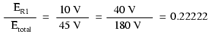
Del mismo modo, ninguna de las otras relaciones de caída de voltaje cambió con el aumento de voltaje de suministro:
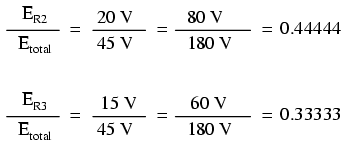
Por esta razón, a un circuito en serie se le suele llamardivisor de voltajepor su capacidad para proporcionar (o dividir) el voltaje total en porciones fraccionarias de relación constante. Con un poco de álgebra, podemos derivar una fórmula para determinar la caída de voltaje de una resistencia en serie teniendo en cuenta nada más que el voltaje total, la resistencia individual y la resistencia total:
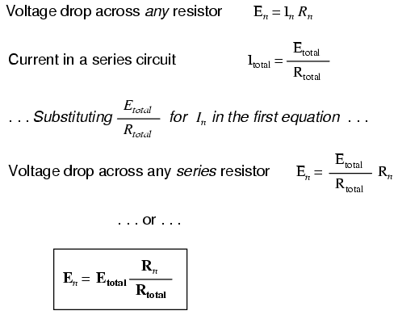
La relación entre la resistencia individual y la resistencia total es la misma que la relación entre la caída de voltaje individual y el voltaje de suministro total en un circuito divisor de voltaje. Esto se conoce como elfórmula del divisor de voltaje, y es un método abreviado para determinar la caída de voltaje en un circuito en serie sin pasar por los cálculos actuales de la ley de Ohm.
Usando esta fórmula, podemos volver a analizar las caídas de voltaje del circuito de ejemplo en menos pasos:
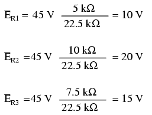
Los divisores de voltaje encuentran una amplia aplicación en circuitos de medidores eléctricos, donde se utilizan combinaciones específicas de resistencias en serie para "dividir" un voltaje en proporciones precisas como parte de un dispositivo de medición de voltaje.
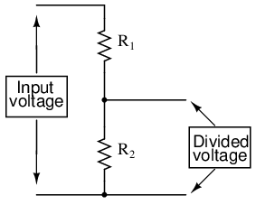
Un dispositivo que se utiliza frecuentemente como componente divisor de voltaje es elpotenciómetro, que es una resistencia con un elemento móvil posicionado mediante un pomo o palanca manual. El elemento móvil, típicamente llamadolimpiaparabrisas, hace contacto con una tira resistiva de material (comúnmente llamadaalambre deslizantesi es de alambre metálico resistivo) en cualquier punto seleccionado por el control manual:
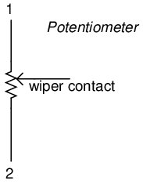
El contacto del limpiador es el símbolo de la flecha hacia la izquierda dibujado en el medio del elemento de resistencia vertical. A medida que se mueve hacia arriba, hace contacto con la tira resistiva más cerca del terminal 1 y más lejos del terminal 2, lo que reduce la resistencia al terminal 1 y aumenta la resistencia al terminal 2. A medida que se mueve hacia abajo, se produce el efecto opuesto. La resistencia medida entre los terminales 1 y 2 es constante para cualquier posición del limpiaparabrisas.
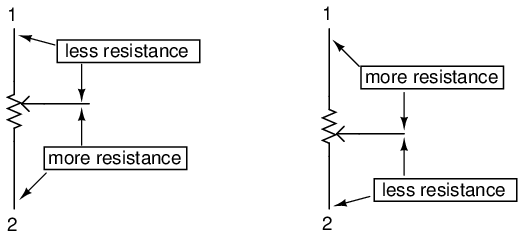
Aquí se muestran ilustraciones internas de dos tipos de potenciómetros, rotativos y lineales:
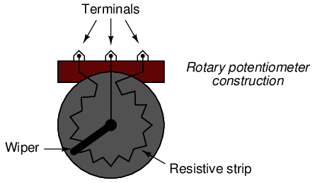
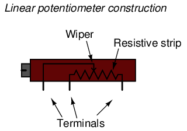
Algunos potenciómetros lineales se accionan mediante el movimiento en línea recta de una palanca o botón deslizante. Otros, como el que se muestra en la ilustración anterior, se accionan mediante un tornillo giratorio para lograr un ajuste preciso. A estas últimas unidades a veces se les llamapotes de recorte, porque funcionan bien para aplicaciones que requieren "recortar" una resistencia variable a un valor preciso. Cabe señalar que no todos los potenciómetros lineales tienen las mismas asignaciones de terminales que se muestran en esta ilustración. En algunos, el terminal limpiador está en el medio, entre los dos terminales finales.
La siguiente fotografía muestra un potenciómetro giratorio real con limpiador y alambre deslizante expuestos para una fácil visualización. El eje que mueve el limpiador se ha girado casi completamente en el sentido de las agujas del reloj para que el limpiador casi toque el extremo terminal izquierdo del cable deslizante:
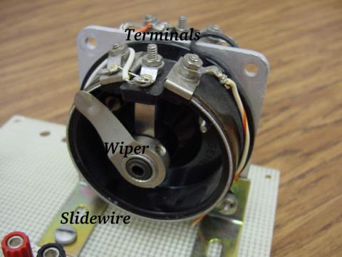
Aquí está el mismo potenciómetro con el eje del limpiaparabrisas movido casi a la posición completamente en sentido contrario a las agujas del reloj, de modo que el limpiaparabrisas esté cerca del otro extremo de su recorrido:
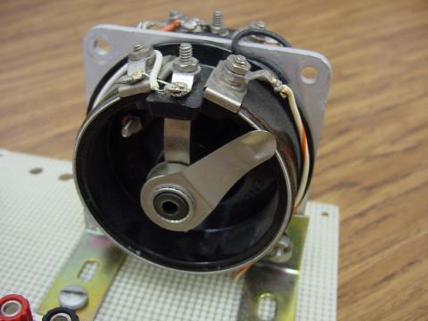
Si se aplica un voltaje constante entre los terminales externos (a lo largo del cable deslizante), la posición del limpiador derivará una fracción del voltaje aplicado, medible entre el contacto del limpiador y cualquiera de los otros dos terminales. El valor fraccionario depende enteramente de la posición física del limpiaparabrisas:
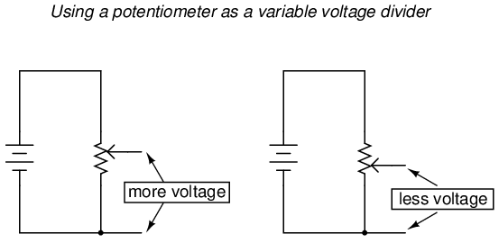
Al igual que el divisor de voltaje fijo, el voltaje del potenciómetrorelación de divisiónes estrictamente una función de la resistencia y no de la magnitud del voltaje aplicado. En otras palabras, si la perilla o palanca del potenciómetro se mueve a la posición del 50 por ciento (centro exacto), la caída de voltaje entre el limpiador y cualquiera de los terminales exteriores sería exactamente la mitad del voltaje aplicado, sin importar cuál sea ese voltaje o cuál sea la resistencia de extremo a extremo del potenciómetro. En otras palabras, un potenciómetro funciona como un divisor de voltaje variable donde la relación de división de voltaje se establece según la posición del limpiador.
Esta aplicación del potenciómetro es un medio muy útil para obtener un voltaje variable de una fuente de voltaje fijo como una batería. Si un circuito que está construyendo requiere una cierta cantidad de voltaje que es menor que el valor del voltaje de una batería disponible, puede conectar los terminales externos de un potenciómetro a través de esa batería y "marcar" cualquier voltaje que necesite entre el limpiador del potenciómetro y uno de los terminales externos para usar en su circuito:
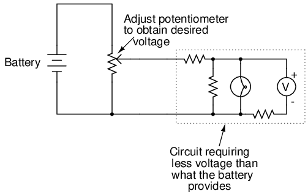
Cuando se usa de esta manera, el nombrepotenciómetrotiene mucho sentido: ellosmetro(controlar) elpotencial(voltaje) aplicado a través de ellos creando una relación de divisor de voltaje variable. Este uso del potenciómetro de tres terminales como divisor de voltaje variable es muy popular en el diseño de circuitos.
Aquí se muestran varios potenciómetros pequeños del tipo comúnmente utilizado en equipos electrónicos de consumo y por aficionados y estudiantes en la construcción de circuitos:
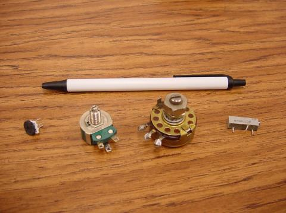
Las unidades más pequeñas en el extremo izquierdo y derecho están diseñadas para conectarse a una placa de pruebas sin soldadura o soldarse a una placa de circuito impreso. Las unidades intermedias están diseñadas para montarse en un panel plano con cables soldados a cada uno de los tres terminales.
Aquí hay tres potenciómetros más, más especializados que el conjunto que se acaba de mostrar:
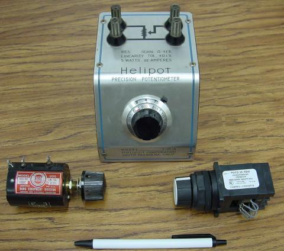
La gran unidad "Helipot" es un potenciómetro de laboratorio diseñado para una conexión rápida y sencilla a un circuito. La unidad en la esquina inferior izquierda de la fotografía es el mismo tipo de potenciómetro, solo que sin caja ni dial de conteo de 10 vueltas. Ambos potenciómetros son unidades de precisión que utilizan tiras de resistencia de pista helicoidal de múltiples vueltas y mecanismos de limpiaparabrisas para realizar pequeños ajustes. La unidad en la parte inferior derecha es un potenciómetro de montaje en panel, diseñado para servicio severo en aplicaciones industriales.
- REVISAR:
- Proporción de circuitos en serie, odividir, la tensión de alimentación total entre las caídas de tensión individuales, dependiendo estrictamente las proporciones de las resistencias: ERn = ETotal (Rn / RTotal)
- Un potenciómetro es un componente de resistencia variable con tres puntos de conexión, que se utiliza frecuentemente como divisor de voltaje ajustable.
Ley de tensiones de Kirchhoff (LTK)
Echemos otro vistazo a nuestro circuito en serie de ejemplo, esta vez numerando los puntos en el circuito como referencia de voltaje:
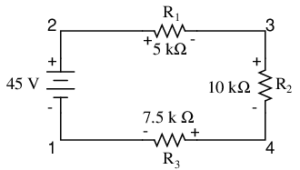
Si tuviéramos que conectar un voltímetro entre los puntos 2 y 1, el cable de prueba rojo al punto 2 y el cable de prueba negro al punto 1, el medidor registraría +45 voltios. Normalmente, el signo "+" no se muestra, sino que está implícito, para lecturas positivas en las pantallas de medidores digitales. Sin embargo, para esta lección la polaridad de la lectura de voltaje es muy importante y por eso mostraré números positivos explícitamente:
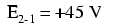
Cuando un voltaje se especifica con un subíndice doble (los caracteres "2-1" en la notación "E2-1"), significa la tensión en el primer punto (2) medida con referencia al segundo punto (1). Una tensión especificada como "Ecd" significaría el voltaje indicado por un medidor digital con el cable de prueba rojo en el punto "c" y el cable de prueba negro en el punto "d": el voltaje en "c" en referencia a "d".
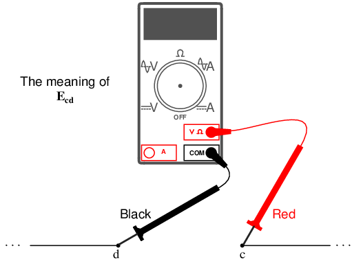
Si tomáramos ese mismo voltímetro y midiéramos la caída de voltaje en cada resistencia, dando vueltas alrededor del circuito en el sentido de las agujas del reloj con el cable de prueba rojo de nuestro medidor en el punto de adelante y el cable de prueba negro en el punto de atrás, obtendríamos las siguientes lecturas:
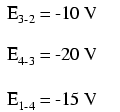
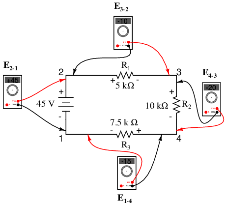
Ya deberíamos estar familiarizados con el principio general para circuitos en serie que establece que las caídas de voltaje individuales se suman al voltaje total aplicado, pero medir las caídas de voltaje de esta manera y prestar atención a la polaridad (signo matemático) de las lecturas revela otra faceta de este principio: que todos los voltajes medidos como tales suman cero:
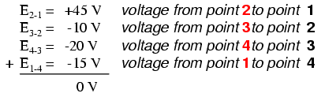
Este principio se conoce comoLey de voltaje de Kirchhoff(descubierto en 1847 por Gustav R. Kirchhoff, físico alemán), y se puede afirmar así:
"La suma algebraica de todos los voltajes en un bucle debe ser igual a cero"
By algebraico, me refiero a tener en cuenta los signos (polaridades) y las magnitudes. Porbucle, me refiero a cualquier camino trazado desde un punto de un circuito hasta otros puntos de ese circuito, y finalmente de regreso al punto inicial. En el ejemplo anterior, el bucle se formó con los siguientes puntos en este orden: 1-2-3-4-1. No importa en qué punto comenzamos o en qué dirección procedemos al trazar el bucle; la suma de voltaje seguirá siendo igual a cero. Para demostrarlo, podemos contar los voltajes en el bucle 3-2-1-4-3 del mismo circuito:
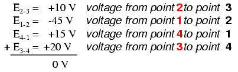
Esto puede tener más sentido si volvemos a dibujar nuestro circuito en serie de ejemplo de modo que todos los componentes estén representados en una línea recta:
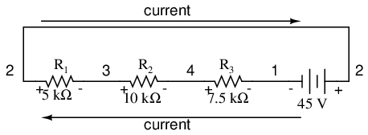
Sigue siendo el mismo circuito en serie, sólo que con los componentes dispuestos de forma diferente. Observe las polaridades de las caídas de voltaje de la resistencia con respecto a la batería: el voltaje de la batería es negativo a la izquierda y positivo a la derecha, mientras que todas las caídas de voltaje de la resistencia están orientadas en sentido contrario: positivo a la izquierda y negativo a la derecha. Esto se debe a que las resistencias sonresistiendoel flujo de electrones empujado por la batería. En otras palabras, el "empuje" ejercido por las resistenciascontrael flujo de electronesdebeestar en dirección opuesta a la fuente de fuerza electromotriz.
Aquí vemos lo que indicaría un voltímetro digital en cada componente de este circuito, el cable negro a la izquierda y el cable rojo a la derecha, dispuestos en forma horizontal:
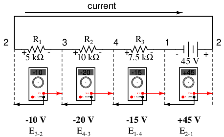
Si tomáramos el mismo voltímetro y leyéramos el voltaje en combinaciones de componentes, comenzando solo con R1A la izquierda y avanzando por toda la cadena de componentes, veremos cómo los voltajes se suman algebraicamente (hasta cero):
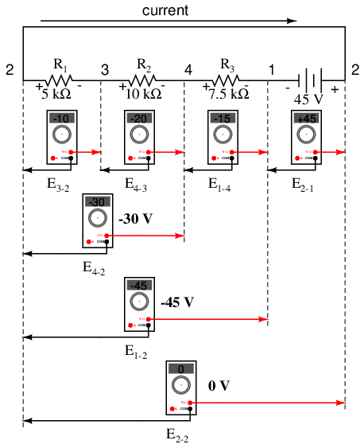
El hecho de que los voltajes en serie se sumen no debería ser ningún misterio, pero notamos que elpolaridadde estos voltajes hace una gran diferencia en cómo se suman las cifras. Mientras lee el voltaje en R1, R1--R2y R1--R2--R3(Estoy usando un símbolo de "doble guión" "--" para representar elserieconexión entre resistencias R1, R2y R3), vemos cómo las tensiones miden sucesivamente magnitudes mayores (aunque negativas), porque las polaridades de las caídas de tensión individuales están en la misma orientación (positiva izquierda, negativa derecha). La suma de las caídas de voltaje en R1, R2y R3equivale a 45 voltios, que es lo mismo que la salida de la batería, excepto que la polaridad de la batería es opuesta a la de las caídas de voltaje de la resistencia (negativo izquierdo, positivo derecho), por lo que terminamos con 0 voltios medidos en toda la cadena de componentes.
Que terminemos con exactamente 0 voltios en toda la cadena tampoco debería ser ningún misterio. Mirando el circuito, podemos ver que el extremo izquierdo de la cuerda (lado izquierdo de R1: punto número 2) se conecta directamente al extremo derecho de la cadena (lado derecho de la batería: punto número 2), según sea necesario para completar el circuito. Como estos dos puntos están directamente conectados, soneléctricamente comúnel uno al otro. Y, como tal, el voltaje entre esos dos puntos eléctricamente comunesdebeser cero.
Ley de voltaje de Kirchhoff (a veces denotada comoKVLpara abreviar) funcionará paraanyconfiguración del circuito en absoluto, no solo series simples. Observe cómo funciona para este circuito paralelo:
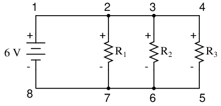
Al ser un circuito paralelo, el voltaje en cada resistencia es el mismo que el voltaje de suministro: 6 voltios. Al contar los voltajes alrededor del bucle 2-3-4-5-6-7-2, obtenemos:
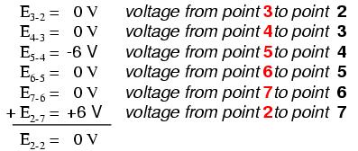
Observe cómo etiqueto el voltaje final (suma) como E2-2. Dado que comenzamos nuestra secuencia de pasos en bucle en el punto 2 y terminamos en el punto 2, la suma algebraica de esos voltajes será la misma que la tensión medida entre el mismo punto (E2-2), que por supuesto debe ser cero.
El hecho de que este circuito sea paralelo en lugar de serie no tiene nada que ver con la validez de la Ley de Voltaje de Kirchhoff. De hecho, el circuito podría ser una "caja negra" (la configuración de sus componentes está completamente oculta a nuestra vista, con solo un conjunto de terminales expuestos entre los cuales podemos medir el voltaje) y KVL aún sería válido:
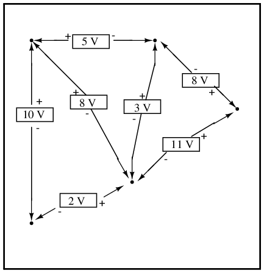
Pruebe cualquier orden de pasos desde cualquier terminal en el diagrama anterior, regresando al terminal original y encontrará que la suma algebraica de los voltajessiemprees igual a cero.
Además, el "bucle" que trazamos para KVL ni siquiera tiene que ser un camino de corriente real en el sentido de circuito cerrado de la palabra. Todo lo que tenemos que hacer para cumplir con KVL es comenzar y terminar en el mismo punto del circuito, contando las caídas de voltaje y las polaridades a medida que avanzamos entre el siguiente y el último punto. Considere este ejemplo absurdo, trazando el "bucle" 2-3-6-3-2 en el mismo circuito de resistencia en paralelo:
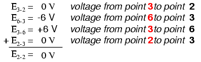
KVL se puede utilizar para determinar un voltaje desconocido en un circuito complejo, donde se conocen todos los demás voltajes alrededor de un "bucle" particular. Tome el siguiente circuito complejo (en realidad, dos circuitos en serie unidos por un solo cable en la parte inferior) como ejemplo:
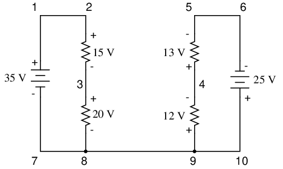
Para simplificar el problema, omití los valores de resistencia y simplemente di caídas de voltaje en cada resistencia. Los dos circuitos en serie comparten un cable común entre ellos (cable 7-8-9-10), realizando mediciones de voltaje.entrelos dos circuitos posibles. Si quisiéramos determinar el voltaje entre los puntos 4 y 3, podríamos establecer una ecuación KVL con el voltaje entre esos puntos como incógnita:
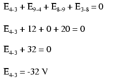
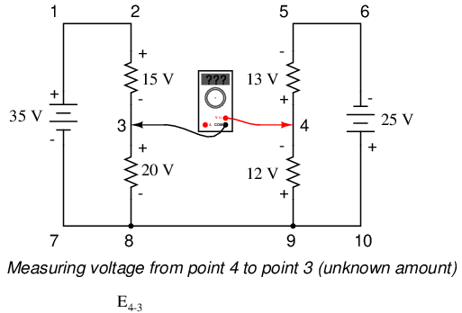
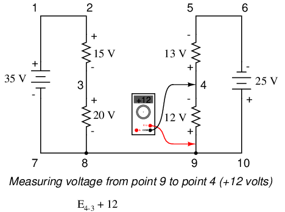
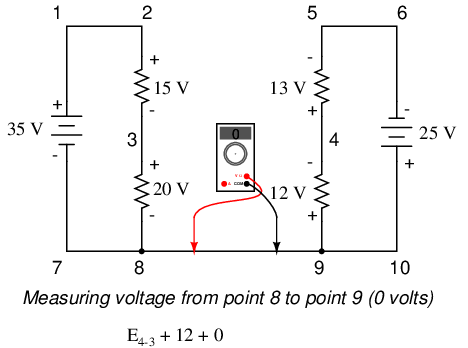
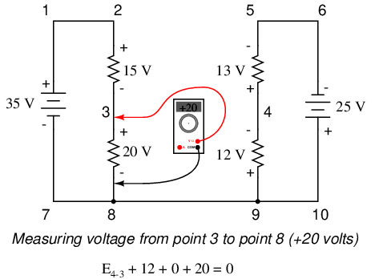
Dando la vuelta al bucle 3-4-9-8-3, escribimos las cifras de caída de voltaje como las registraría un voltímetro digital, midiendo con el cable de prueba rojo en el punto de adelante y el cable de prueba negro en el punto de atrás a medida que avanzamos alrededor del circuito. Por lo tanto, el voltaje del punto 9 al punto 4 es positivo (+) 12 voltios porque el "conductor rojo" está en el punto 9 y el "conductor negro" está en el punto 4. El voltaje del punto 3 al punto 8 es positivo (+) 20 voltios porque el "conductor rojo" está en el punto 3 y el "conductor negro" está en el punto 8. El voltaje del punto 8 al punto 9 es cero, por supuesto, porque esos dos puntos son eléctricamente comunes.
Nuestra respuesta final para el voltaje del punto 4 al punto 3 es negativo (-) 32 voltios, lo que nos dice que el punto 3 es en realidad positivo con respecto al punto 4, precisamente lo que indicaría un voltímetro digital con el cable rojo en el punto 4 y el cable negro en el punto 3:
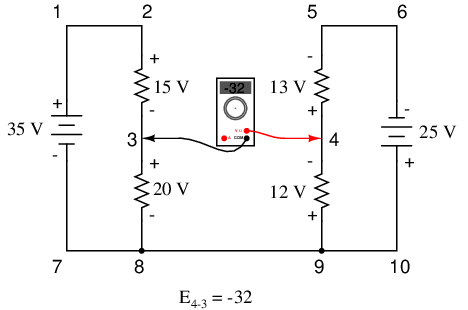
En otras palabras, la ubicación inicial de nuestros "cables de medidor" en este problema de KVL fue "al revés". Si hubiéramos generado nuestra ecuación KVL comenzando con E3-4en lugar de E4-3, dando la vuelta al mismo circuito con la orientación opuesta del cable del medidor, la respuesta final habría sido E3-4= +32 voltios:
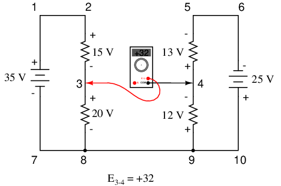
Es importante darse cuenta de que ninguno de los dos enfoques es "incorrecto". En ambos casos llegamos a la valoración correcta de la tensión entre los dos puntos, 3 y 4: el punto 3 es positivo respecto al punto 4, y la tensión entre ellos es de 32 voltios.
- REVISAR:
- Ley de voltaje de Kirchhoff (KVL):"La suma algebraica de todos los voltajes en un bucle debe ser igual a cero"
Circuitos divisores de corriente
Analicemos un circuito paralelo simple, determinando las corrientes de rama a través de resistencias individuales:
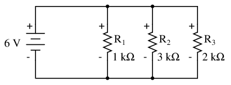
Sabiendo que los voltajes en todos los componentes en un circuito paralelo son los mismos, podemos completar nuestra tabla de voltaje/corriente/resistencia con 6 voltios en la fila superior:
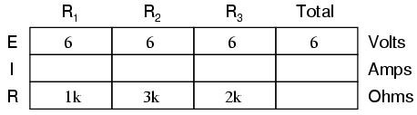
Usando la Ley de Ohm (I=E/R) podemos calcular la corriente de cada rama:
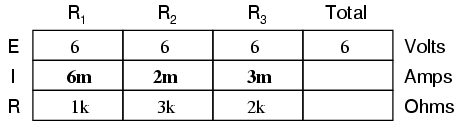
Sabiendo que las corrientes derivadas se suman en circuitos paralelos para igualar la corriente total, podemos llegar a la corriente total sumando 6 mA, 2 mA y 3 mA:
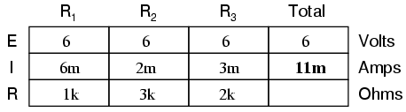
El último paso, por supuesto, es calcular la resistencia total. Esto se puede hacer con la Ley de Ohm (R=E/I) en la columna "total", o con la fórmula de resistencia paralela de resistencias individuales. De cualquier manera, obtendremos la misma respuesta:
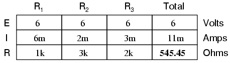
Una vez más, debería ser evidente que la corriente que pasa por cada resistencia está relacionada con su resistencia, dado que el voltaje en todas las resistencias es el mismo. En lugar de ser directamente proporcional, la relación aquí es de proporción inversa. Por ejemplo, la corriente que pasa por R1es el doble de la corriente que pasa por R3, que tiene el doble de resistencia que R1.
Si tuviéramos que cambiar el voltaje de alimentación de este circuito, encontraríamos que (¡sorpresa!) estas relaciones proporcionales no cambian:
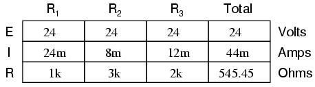
La corriente a través de R1sigue siendo exactamente el doble que R3, a pesar de que el voltaje de la fuente ha cambiado. La proporcionalidad entre diferentes corrientes derivadas es estrictamente una función de la resistencia.
También recuerda a los divisores de voltaje el hecho de que las corrientes derivadas son proporciones fijas de la corriente total. A pesar de que la tensión de alimentación se ha multiplicado por cuatro, la relación entre la corriente de cualquier rama y la corriente total permanece sin cambios:
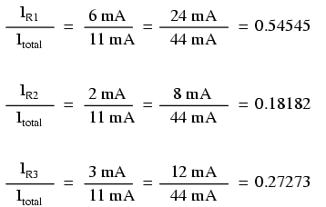
Por esta razón, a un circuito en paralelo se le suele llamardivisor de corrientepor su capacidad para proporcionar (o dividir) la corriente total en partes fraccionarias. Con un poco de álgebra, podemos derivar una fórmula para determinar la corriente de resistencia en paralelo dada nada más que la corriente total, la resistencia individual y la resistencia total:
La relación entre la resistencia total y la resistencia individual es la misma que la de la corriente individual (rama) y la corriente total. Esto se conoce como elfórmula divisoria de corriente, y es un método abreviado para determinar las corrientes derivadas en un circuito paralelo cuando se conoce la corriente total.
Usando el circuito paralelo original como ejemplo, podemos volver a calcular las corrientes derivadas usando esta fórmula, si comenzamos por conocer la corriente total y la resistencia total:
Si te tomas el tiempo para comparar las dos fórmulas divisorias, verás que son notablemente similares. Observe, sin embargo, que la relación en la fórmula del divisor de voltaje es Rn(resistencia individual) dividida por RTotaly cómo la razón en la fórmula divisoria de corriente es RTotaldividido por Rn:
Es bastante fácil confundir estas dos ecuaciones, obteniendo las relaciones de resistencia al revés. Una forma de ayudar a recordar la forma adecuada es tener en cuenta que ambas razones en las ecuaciones divisorias de voltaje y corriente deben ser menores que uno. Después de todo estos sondivisorecuaciones, nomultiplicadorecuaciones! Si la fracción está al revés, proporcionará una proporción mayor que uno, lo cual es incorrecto. Sabiendo que la resistencia total en un circuito en serie (divisor de voltaje) es siempre mayor que cualquiera de las resistencias individuales, sabemos que la fracción para esa fórmula debe ser Rnsobre RTotal. Por el contrario, sabiendo que la resistencia total en un circuito paralelo (divisor de corriente) es siempre menor que cualquiera de las resistencias individuales, sabemos que la fracción para esa fórmula debe ser RTotalsobre Rn.
Los circuitos divisores de corriente también encuentran aplicación en circuitos de medidores eléctricos, donde se desea encaminar una fracción de la corriente medida a través de un dispositivo de detección sensible. Usando la fórmula del divisor de corriente, se puede dimensionar la resistencia de derivación adecuada para proporcionar la cantidad justa de corriente para el dispositivo en cualquier caso dado:
- REVISAR:
- Los circuitos paralelos proporcionan o "dividen" la corriente total del circuito entre las corrientes derivadas individuales, siendo las proporciones estrictamente dependientes de las resistencias: In = ITotal (RTotal / Rn)
Ley de corrientes de Kirchhoff (LCK)
Echemos un vistazo más de cerca al último circuito de ejemplo en paralelo:
Resolviendo para todos los valores de voltaje y corriente en este circuito:
En este punto conocemos el valor de la corriente de cada rama y de la corriente total en el circuito. Sabemos que la corriente total en un circuito paralelo debe ser igual a la suma de las corrientes derivadas, pero en este circuito suceden más cosas que solo eso. Al observar las corrientes en cada punto de unión de cables (nodo) en el circuito, deberíamos poder ver algo más:
En cada nodo del "carril" negativo (cable 8-7-6-5) tenemos corriente que divide el flujo principal hacia cada resistencia de rama sucesiva. En cada nodo del "carril" positivo (cable 1-2-3-4) tenemos corriente que se fusiona para formar el flujo principal de cada resistencia de rama sucesiva. Este hecho debería ser bastante obvio si piensa en la analogía del circuito de tuberías de agua con cada nodo derivado actuando como un accesorio en "T", donde el flujo de agua se divide o fusiona con la tubería principal a medida que viaja desde la salida de la bomba de agua hacia el depósito o sumidero de retorno.
Si miráramos más de cerca un nodo en "T" en particular, como el nodo 3, veríamos que la corriente que ingresa al nodo es igual en magnitud a la corriente que sale del nodo:
Desde la derecha y desde abajo, tenemos dos corrientes que ingresan a la conexión de cables etiquetada como nodo 3. A la izquierda, tenemos una sola corriente que sale del nodo igual en magnitud a la suma de las dos corrientes que ingresan. Para hacer referencia a la analogía de la plomería: siempre que no haya fugas en las tuberías, el flujo que ingresa al accesorio también debe salir del mismo. Esto es válido para cualquier nodo ("adaptación"), sin importar cuántos flujos entren o salgan. Matemáticamente, podemos expresar esta relación general como tal:
Kirchhoff decidió expresarlo de una forma ligeramente diferente (aunque matemáticamente equivalente), llamándoloLa ley de corriente de Kirchhoff(CLK):
Resumida en una frase, la ley de corriente de Kirchhoff dice así:
"La suma algebraica de todas las corrientes que entran y salen de un nodo debe ser igual a cero"
Es decir, si asignamos un signo matemático (polaridad) a cada corriente, que indica si entran (+) o salen (-) de un nodo, podemos sumarlas para llegar a un total de cero, garantizado.
Tomando nuestro nodo de ejemplo (número 3), podemos determinar la magnitud de la corriente que sale por la izquierda configurando una ecuación KCL con esa corriente como valor desconocido:
El signo negativo (-) en el valor de 5 miliamperios nos dice que la corriente essaliendoel nodo, a diferencia de las corrientes de 2 miliamperios y 3 miliamperios, que deben ser ambas positivas (y por lo tantoentrandoel nodo). Si negativo o positivo denota una entrada o salida de corriente es completamente arbitrario, siempre que sean signos opuestos para direcciones opuestas y seamos consistentes en nuestra notación, KCL funcionará.
Juntas, las leyes de tensión y corriente de Kirchhoff son un par de herramientas formidables y útiles para analizar circuitos eléctricos. Su utilidad será aún más evidente en un capítulo posterior ("Análisis de redes"), pero basta decir que estas leyes merecen ser memorizadas por el estudiante de electrónica tanto como la Ley de Ohm.
- REVISAR:
- ley de corriente de Kirchhoff (KCL):"La suma algebraica de todas las corrientes que entran y salen de un nodo debe ser igual a cero"
Colaboradores
Los contribuyentes a este capítulo se enumeran en orden cronológico de sus contribuciones, desde el más reciente hasta el primero. Consulte el Apéndice 2 (Lista de colaboradores) para fechas e información de contacto.
Jason Stark(Junio de 2000): Formato de documentos HTML, que dio lugar a una segunda edición mucho más atractiva.
Ron La Plante(Octubre de 1998): ayudó a crear un método de "tabla" para el análisis de circuitos en serie y en paralelo.
Lecciones en circuitos eléctricoscopyright (C) 2000-2023 Tony R. Kuphaldt, según los términos y condiciones delCC BY License.